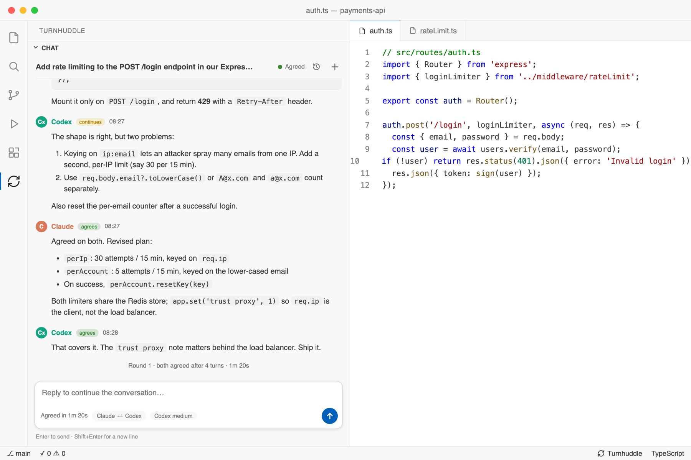
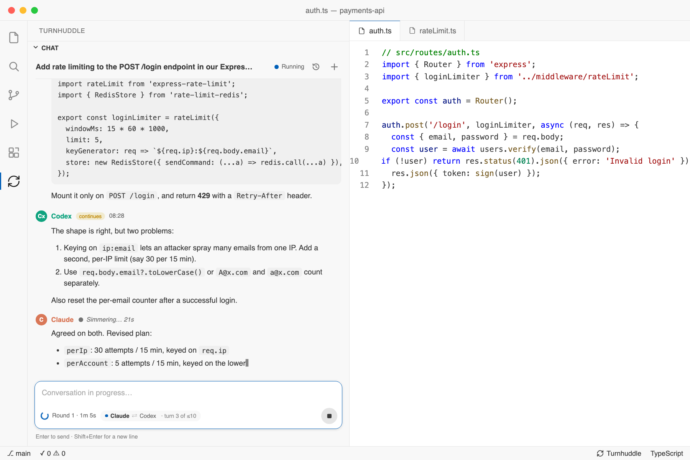
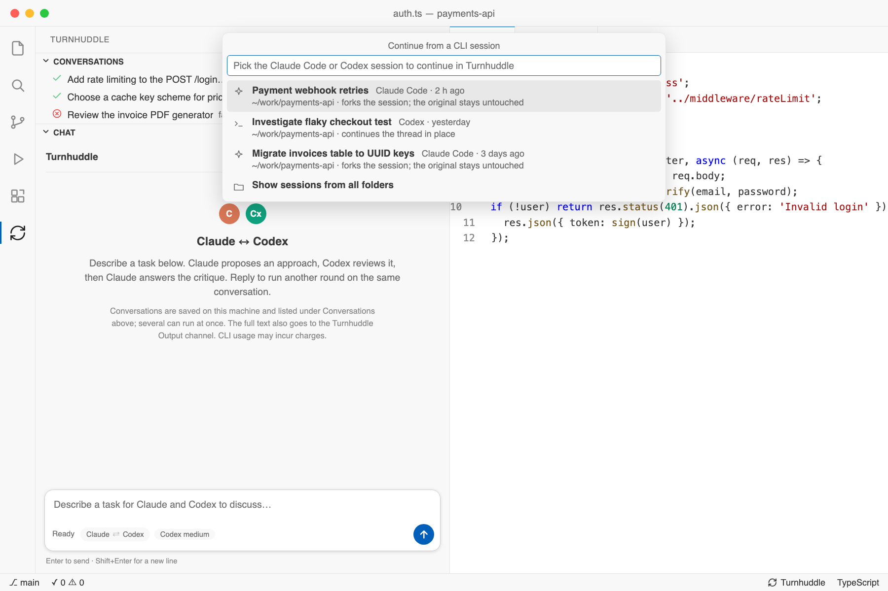

Two coding agents. One answer they both stand behind.
Turnhuddle puts Claude Code and Codex in one VS Code chat. Claude proposes, Codex reviews, and they keep going until both agree, so you get a second opinion without copying text between two tools.
Free and open source · Uses the Claude Code and Codex CLIs you already have · No account, no telemetry

Type a task. Watch them work it out.
Turnhuddle runs the official command-line tools for you, turn by turn, and shows the exchange as a chat.
Install and check
Install the extension, then run Turnhuddle: Check CLI Installations. It finds the Claude Code and Codex CLIs you've already signed in to.
Describe the task
Open the Turnhuddle panel in the Activity Bar and type what you need: a design question, a review, a tricky bug. Press Enter.
Read the conversation
Claude's answer streams in, Codex reviews it, and they go back and forth until both agree. Reply to start another round.

Done when both say it's done.
A fixed number of turns ends conversations too early or too late. Turnhuddle lets the agents decide.
- Every turn ends with a verdict. Each agent says whether the current recommendation is final, shown as agrees or continues.
- Two agreements in a row finish it. One agent can't sign off on its own work.
- A limit you set. After 10 turns by default the round stops and says there was no agreement, rather than going in circles.
- Prefer a fixed round? Switch to Claude, Codex, Claude in settings.
Add rate limiting to POST /login.
Claude proposes express-rate-limit with a Redis store, keyed on IP and email.
continuesCodex spots email spraying from one IP and case-sensitive emails.
continuesClaude adds a per-IP limit, lower-cases emails, resets on success.
agreesCodex confirms the plan and the proxy setting.
agreesBoth agreed after 4 turns
A second opinion, built into your editor.
Everything you'd do by pasting answers between two terminals, in one panel.
One chat, two agents
Your task, Claude's proposals and Codex's reviews in a single thread, with code blocks, lists and tables rendered properly.
Answers stream in
Claude's reply appears as it's written. Codex shows what it's doing, then its review. A live status tells you who's thinking and for how long.
Rounds that converge
The agents alternate until both agree, within a turn limit you choose. Reply to a finished round to dig further on the same conversation.
Saved conversations
Every conversation is kept on your machine and listed with its state. Reopen any of them, run several at once, archive instead of delete.
Continue a CLI session
Started something in Claude Code or Codex? Pick that session and continue it in Turnhuddle, with everything the agent already knows.
Speed you control
Set how hard Codex and Claude think, for Turnhuddle only, without touching your CLI configuration.
Pick up exactly where you left off.
Your conversations, and the ones you started in the CLIs, are one click away.
- A list of everything. Running, completed and failed conversations, newest first, with their round count.
- Continue from Claude Code or Codex. Choose a saved CLI session for this folder. Claude's is forked, so your original session stays untouched.
- Several at once. Start a new conversation while another is still running and switch between them.
- Nothing is deleted. Archive moves a conversation aside; the file stays until you remove it yourself.

No staring at a blank panel.
Most of a round is the models thinking. Turnhuddle shows progress the whole time and lets you trade depth for speed.
Bring your own agents.
Turnhuddle drives the official command-line tools. Install them and sign in once in a terminal; Turnhuddle does the rest.
| Needs | Version | How Turnhuddle uses it | Status |
|---|---|---|---|
| CClaude Code CLI | Recent release, signed in | Plan mode, streaming output, --resume for continued sessions | Required |
| CxCodex CLI | Recent release, signed in | Read-only sandbox, JSON output, exec resume for continued sessions | Required |
| VSVisual Studio Code | 1.95 or later | Chat panel, Conversations view, Output channel | Required |
| Operating system | macOS | Tested on macOS. Windows and Linux should work but aren't verified yet. | macOS tested |
Your code talks only to your agents.
There's no Turnhuddle account and no Turnhuddle server. Your task and the replies go to Claude and Codex through their own CLIs, under your own accounts.
No new logins
Turnhuddle uses the Claude Code and Codex CLIs you've already signed in to. It never asks for or stores a key or password.
No tracking
No analytics and no telemetry. Conversations are plain files on your machine. The only request Turnhuddle makes itself is a daily check for a new version on GitHub, which you can turn off.
Discussion, not edits
Claude runs in plan mode and Codex in a read-only sandbox, and both are told to discuss only. These are the CLIs' own modes, not a sandbox for hooks or MCP servers you've installed.
Questions, answered.
What do I need to use Turnhuddle?
VS Code 1.95 or later, and the Claude Code and Codex command-line tools installed and signed in. Turnhuddle runs those tools for you; it has no account of its own. If the tools aren't on VS Code's path, set turnhuddle.claudePath and turnhuddle.codexPath.
Does it change my files?
It asks both agents to discuss only. Claude runs in plan mode and Codex in a read-only sandbox, so neither should edit your workspace. These are the CLIs' own permission modes, not a security boundary for hooks, plugins or MCP servers you've installed.
What does it cost?
Turnhuddle is free and open source under the MIT licence. Each turn uses your Claude and Codex accounts, so their normal usage and charges apply. Longer rounds use more, because every turn sees the whole conversation.
When does a round stop?
When Claude and Codex both say the recommendation is final, in consecutive turns. A turn limit, 10 by default, ends a round that never converges, and the chat says so. You can press Stop at any time.
Can I continue a conversation I started in the terminal?
Yes. Run Turnhuddle: Continue from a Claude Code or Codex Session and pick it. Claude continues in a fork of that session, so the original is left as it was; a Codex thread continues in place.
Where are my conversations stored?
As plain JSON files in VS Code's storage for the extension, on your machine. Turnhuddle: Reveal History Folder opens it. Archived conversations stay there until you delete them yourself.
How do updates work?
If you installed from the Marketplace, VS Code updates Turnhuddle for you. Either way, Turnhuddle checks GitHub once a day and offers to install a newer version, verifying the download's checksum first. Run Turnhuddle: Check for Updates any time, or turn the daily check off in settings.
How do I install it?
From the Visual Studio Marketplace, or search for Turnhuddle in VS Code's Extensions view. Each GitHub release also has the VSIX, for Extensions: Install from VSIX….
Stop pasting between two agents.
Let Claude and Codex review each other, right where you write the code.